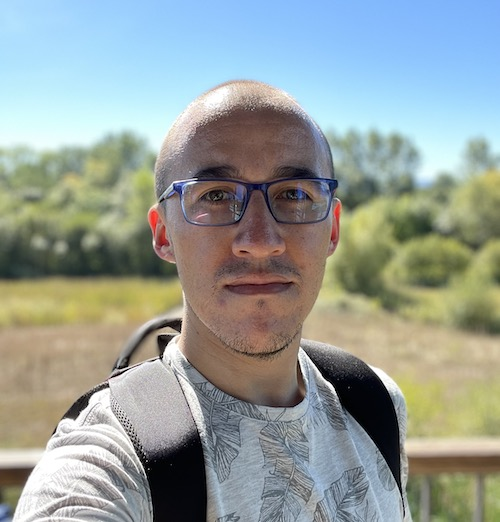
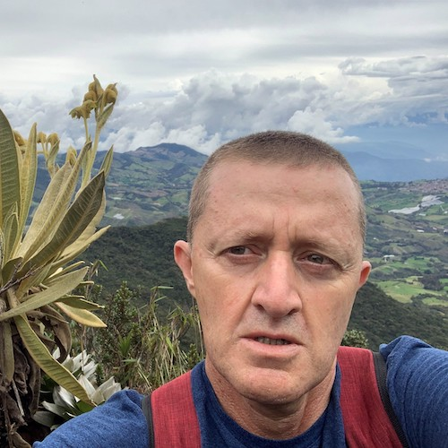

Introducción a la Aerobiología
XII Congreso Colombiano de Botánica
Popayán, Colombia
Noviembre 4 al 8 del 2024
Información general
Fecha: 4 de noviembre del 2024
Lugar: Popayán, Colombia
Duración: 4 horas
Cupos: 20
Inversión: desde $20.000 COP (ver detalles)
Inscripción: en la página del XII Congreso Colombiano de Botánica
Contacto: alex.espinosa@udea.edu.co
Descripción
En el aire, una amplia variedad de partículas, tanto bióticas como abióticas, se encuentran en suspensión. La aerobiología se enfoca en el estudio de las partículas biológicas dispersadas pasivamente en el aire, con el objetivo de comprender la propagación de enfermedades en humanos, animales y plantas, y desarrollar medidas preventivas. Los procesos aerobiológicos, como la producción, liberación, transporte, deposición y resuspensión de biopartículas, están influenciados por eventos atmosféricos y la biología de los organismos productores. En el Neotrópico, se ha subestimado la diversidad y abundancia de biopartículas aerovagantes, lo que ha limitado los estudios aerobiológicos, especialmente en países como Colombia. Este curso ofrece una introducción a la aerobiología desde un contexto neotropical, explorando la historia y el desarrollo de esta disciplina en el país, así como las técnicas de muestreo, la identificación de tipos polínicos y fúngicos en la atmósfera urbana colombiana, y el análisis de datos aerobiológicos.
Objetivos
Conocer los objetivos de trabajo y los métodos de la aerobiología como una ciencia de desarrollo necesaria en Colombia
Identificar las principales biopartículas que son objeto de estudio de la aerobiología.
Determinar el efecto de los factores bióticos y abióticos sobre la producción, liberación, transporte, deposición y abundancia de las biopartículas aerovagantes.
Reconocer las técnicas y metodologías más apropiadas para el estudio de las biopartículas.
Metodología
El curso se estructura de forma teórico-práctica, centrado en los principios básicos de la aerobiología desde una perspectiva neotropical, considerando las oportunidades y desafíos de los estudios aerobiológicos en el país. Las secciones teóricas comprenden charlas magistrales que abordan conceptos fundamentales, historia y técnicas de muestreo. Las secciones prácticas ofrecen una introducción a la identificación de las principales biopartículas en la atmósfera colombiana. Al finalizar, los estudiantes comprenderán la relevancia de la aerobiología en zonas tropicales y podrán tener los conocimientos básicos para iniciar sus propios muestreos aerobiológicos de manera básica.
Inversión
| Tipo de participante | Valor (COP) |
|---|---|
| Estudiante asociado ACB 2024 | $20.000 |
| Estudiante no asociado ACB 2024 | $30.000 |
| Profesional asociado ACB 2024 | $40.000 |
| Profesional no asociado ACB 2024 | $50.000 |
¿Quieres ser parte de la Asociación Colombiana de Botánica (ACB)?
Conoce como afiliarte en el siguiente enlace: proceso de afiliación a la ACB.
Instructores

Álex Espinosa Correa es Biólogo y candidato a Doctor en Biología de la Universidad de Antioquia UdeA, especializado en el campo de la botánica, la palinología y la aerobiología. Apasionado de la Ciencia Abierta y Reproducible, R, Quarto, la visualización de datos, los SIG, y el software libre y de código abierto (FLOSS).

Fernando Alveiro Alzate Guarin, Biólogo y Doctor en Biología, es profesor asociado del Instituto de Biología de la Universidad de Antioquia, donde imparte cursos relacionados con taxonomía y evolución de plantas. Los intereses investigativos incluyen la descripción y caracterización de la diversidad de diferentes grupos de plantas y el estudio de la aerobiología como una forma de abordar la biodiversidad, su dinámica y sus impactos.
Contenido
¿Qué es la aerobiología?
- Definición de aerobiología
- Historia de la aerobiología
- Aerosoles Biológicos Primarios (PBA) o bioaerosoles
Procesos aerobiológicos
- La ruta aerobiológica
Métodos de muestreo
- Principios de muestreo
- Técnicas de muestreo
- Instrumentos de muestreo
Principales bioaerosoles
- Tipos polínicos
- Tipos fúngicos
Otros cursos
Quizá te pueda interesar alguno de nuestros otros cursos que tendremos durante el congreso:
Licencia
This work by Álex Espinosa-Correa & Fernando Alveiro Alzate-Guarin is licensed under CC BY 4.0